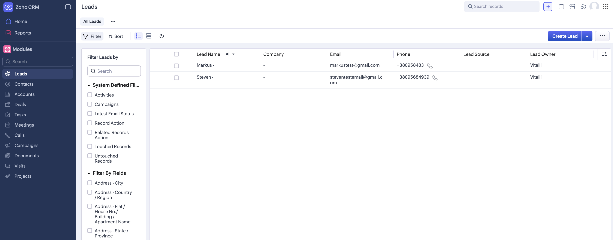
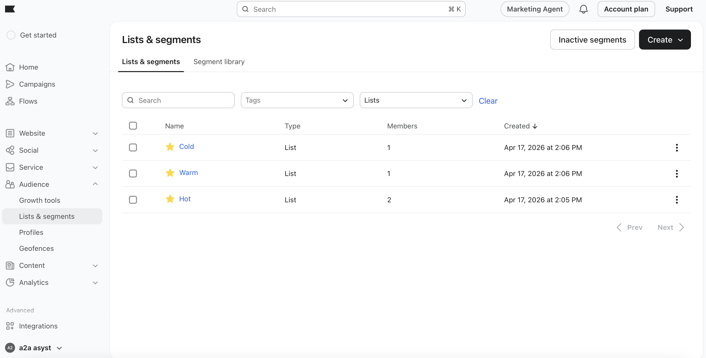
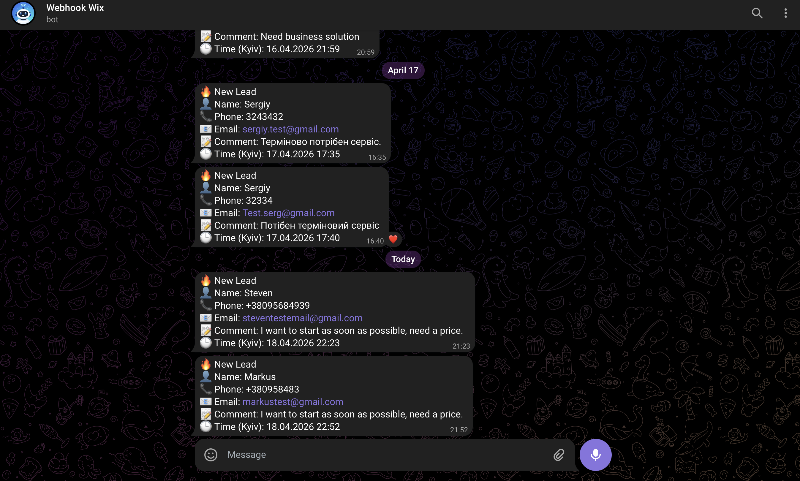
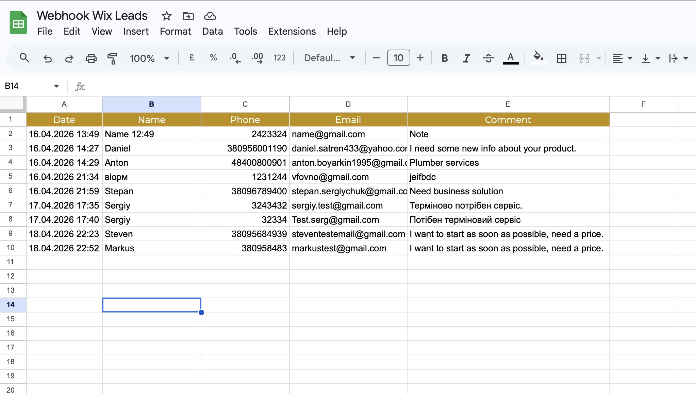
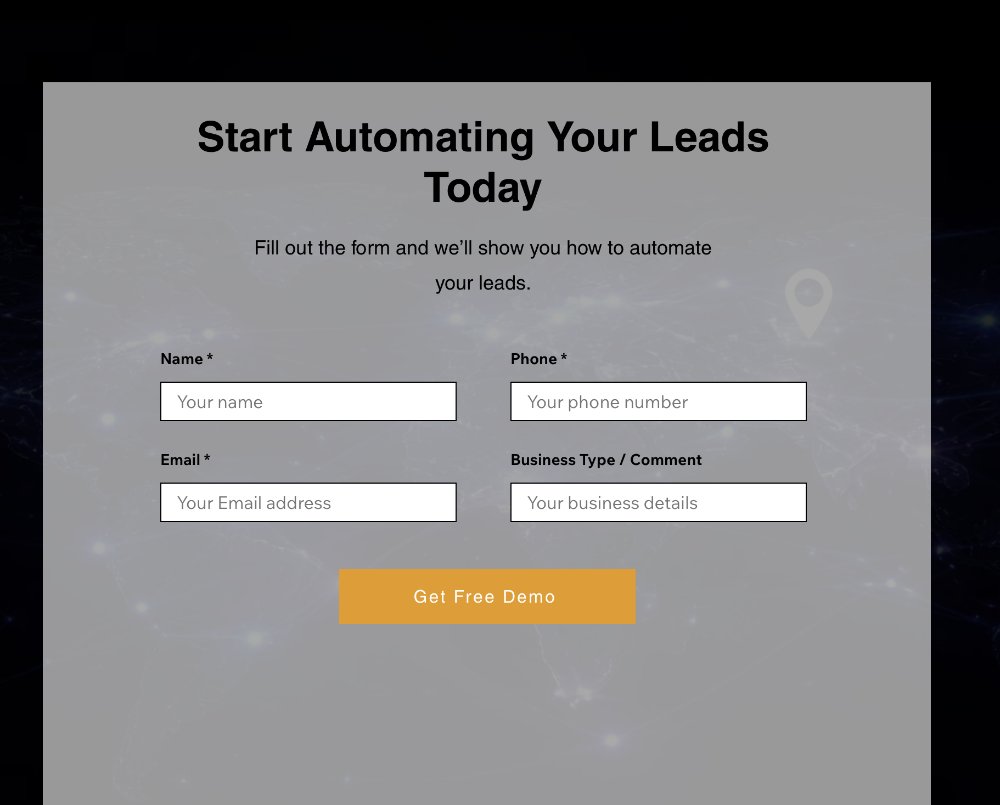

Context
Business: AIIAAsyst - an AI automation agency helping SMBs automate lead generation and client communication.
Website: aiiaasyst.wixsite.com/webhook
Situation before: Leads from the website contact form were processed manually. A manager had to copy data from email to spreadsheet, judge intent by hand, and route the contact to the right follow-up. Response time: 2-4 hours. No CRM. No segmentation.
Problem
Two problems had to be solved.
Business problem: Every new lead required 15-20 minutes of manual work across copy-paste, CRM entry, and email list routing - unscalable and error-prone.
Technical blocker: The native Wix Form sent data to the n8n webhook with delays of up to 1.5 hours, and extracting individual field values from the Wix payload was inconsistent. This made the automation unreliable before it even started.
Solution
Replaced the native Wix Form with a custom frontend built from individual input fields. Form submission logic was moved to a Wix backend function that fires a POST request directly to the n8n webhook - eliminating the delay entirely and giving full control over the payload structure.
The n8n workflow then fans out in parallel: logs the lead to Google Sheets, sends a Telegram notification to the manager, creates a Zoho CRM lead via OAuth 2.0, and simultaneously runs AI qualification using nvidia/nemotron-3-super-120b (free tier via OpenRouter). The AI returns a structured JSON score (hot / warm / cold), which routes the lead into the correct Klaviyo email list via the Klaviyo Profiles API.
⚡ Engineering insight: Added anIfguard node before theSwitch Stateto handle edge cases where the AI returns an unexpected value - defaulting to warm to avoid losing leads. Structured Output Parser enforces strict JSON schema from the LLM response.
Process
- Wix custom form (frontend + backend) - Replaced native Wix Form with custom HTML inputs. Wix backend sends a
POSTwith{name, phone, email, comment}directly to the n8n webhook URL. No delay. - Webhook Wix (n8n trigger) - Receives POST payload.
Body WixSet node extracts$json.body.*fields into clean variables for downstream nodes. - Parallel branch A - Google Sheets -
Add Row (Leads)appends a timestamped row (Europe/Kyiv timezone) to the “Webhook Wix Leads” spreadsheet. Columns: Date, Name, Phone, Email, Comment. - Parallel branch B - Telegram -
Edit Fieldsformats a structured message with emoji labels.Send a text messagepushes it to the manager’s bot instantly. - Parallel branch C - Zoho CRM -
Create a leadnode creates a Lead record via OAuth 2.0, mapping name → First_Name, email, phone, comment → Description. - Parallel branch D - AI qualification -
Basic LLM Chainsends the comment field to nvidia/nemotron-3-super-120b-a12b:free via OpenRouter with a role-based prompt.Structured Output Parserenforces{"state":"hot|warm|cold"}JSON schema. - If + Switch routing -
Ifnode validates the AI output; unknown values default to warm.Switch Stateroutes to one of three Set nodes (Hot / Warm / Cold List ID), then merges into a singleList IDnode. - Klaviyo - Create Profile + Add to List -
Create ProfilecallsPOST /api/profile-import/.Parse Profile IDextracts the returned ID.Add Profile to ListcallsPOST /api/lists/{listId}/relationships/profiles/- placing the lead in exactly one of three email sequences.
Results
| Metric | Before | After |
|---|---|---|
| Manual work per lead | 15-20 min | 0 min |
| Pipeline execution time | 2-4 hours | < 10 seconds |
| Systems updated per lead | 1 (email inbox) | 4 simultaneously |
| Webhook delivery delay | Up to 1.5 hours | Instant |
| Lead segmentation | None | 3 tiers: hot / warm / cold |
| System availability | Business hours only | 24/7 autonomous |
Tech Stack
- Wix - Landing page + custom lead form
- Wix Velo - Backend function sending POST to n8n webhook
- n8n - Core automation engine (webhook, parallel branches, Switch routing)
- OpenRouter - LLM API gateway (free tier)
- nvidia/nemotron-3-super-120b-a12b - AI model for lead qualification
- Google Sheets - Lead log with timestamped rows
- Telegram Bot - Instant manager notifications
- Zoho CRM - Lead records via OAuth 2.0
- Klaviyo API - Profile creation + list routing (hot / warm / cold)
AI Qualification Prompt (key logic)
ROLE: Lead qualification assistant
INPUT: Lead comment from website form
OUTPUT: { "state": "hot" | "warm" | "cold" }
hot → ready to buy, asks pricing / call / start now
warm → interested, exploring, moderate intent
cold → vague, unclear, empty, spam
Enforced via: Structured Output Parser (strict JSON schema)Loom Screencast
Screenshots
n8n workflow canvas (full view)

Zoho CRM - new lead record

Klaviyo - hot / warm / cold lists

Telegram bot - notification message

Google Sheets - leads table with data rows

Wix landing page with form visible